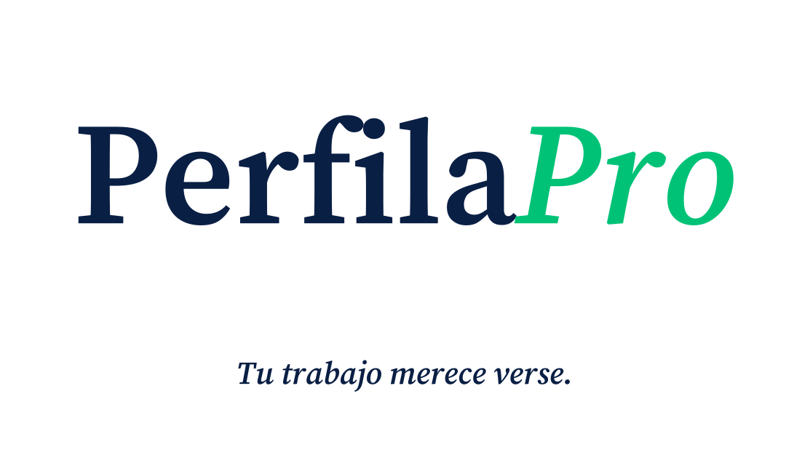
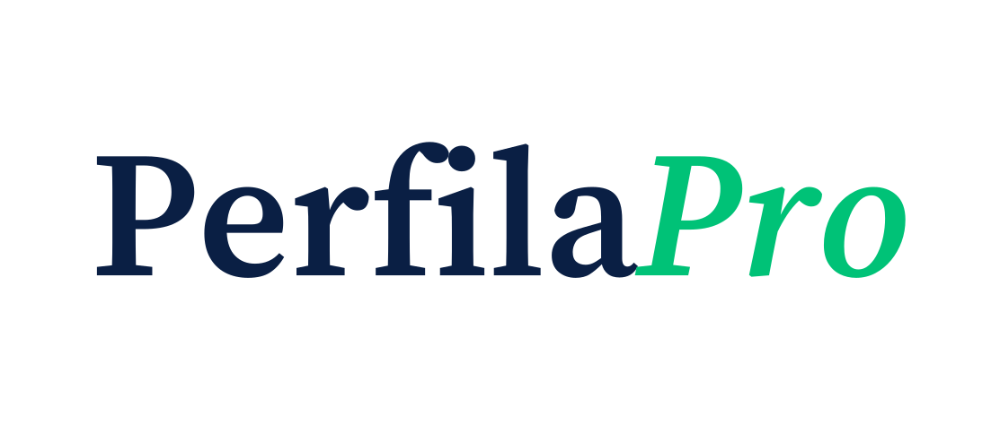
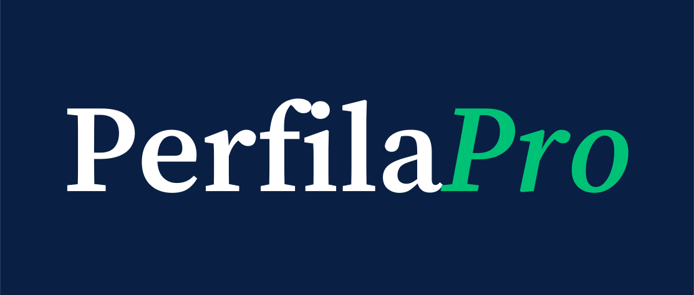
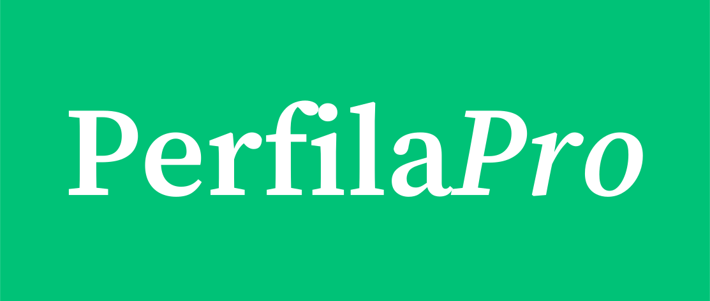
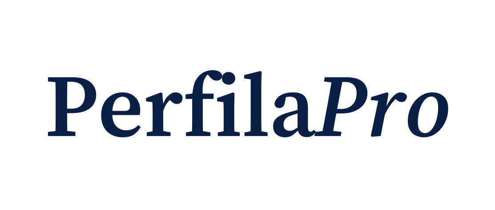
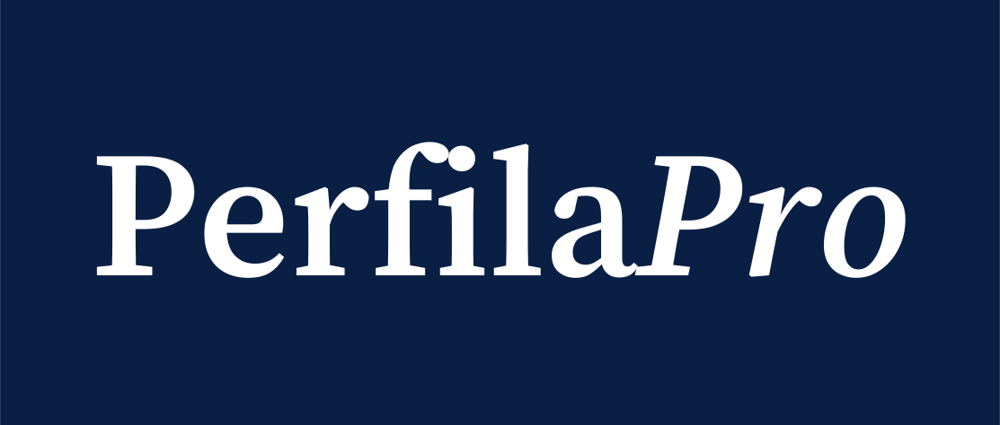
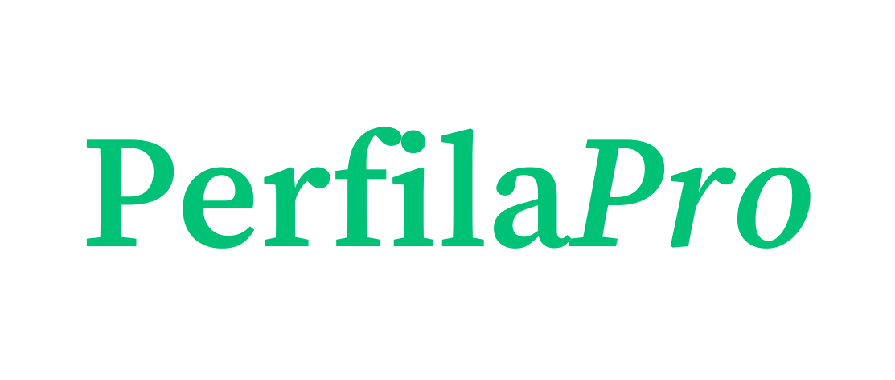

Documento de referencia para usar el wordmark, el isotipo y la paleta de PerfilaPro en cualquier soporte: documentos legales, vinilo de furgo, redes, merchandising, prensa. Todos los assets están en este mismo directorio (public/assets/brand/) y son vectoriales con texto convertido a paths — no requieren que el destino tenga Source Serif 4 instalada.
La marca se reconoce por el contraste tinta/verde. Usar otros colores rompe la asociación. Los hex viven hardcodeados en public/styles/tokens-color.css, netlify/functions/lib/email-layout.js y scripts/generate-brand-assets.js — cualquier cambio toca los tres en el mismo commit.
La serif es la firma. La sans es el oficio. Source Serif 4 SemiBold (600) construye el wordmark, los títulos y el tagline. Inter cubre cuerpo de texto, UI y formularios. Los TTFs viven en netlify/functions/lib/fonts/ y se subsetean automáticamente en cada PDF generado.
Source Serif 4 SemiBold con "Pro" en italic. Letter-spacing -0.02em. Cada glifo está convertido a path en los SVG, así que el archivo se abre idéntico en cualquier editor o imprenta sin instalar la fuente.






El wordmark trae clearance integrado equivalente a su x-height en cada lado — no añadir texto, iconos ni bordes dentro de ese margen. Tamaño mínimo legible: 14 px de alto (pantalla) o 8 mm (impresión). Por debajo, usar el isotipo.
Cuando el wordmark no cabe — favicon, avatar de redes, app icon, sello en QR, watermark — usamos la P italic en verde, extraída del propio "Pro". No es un símbolo arbitrario: vive dentro del logotipo. Cuadrado redondeado con radio del 22 % del lado.
Wordmark grande con la frase "Tu trabajo merece verse." en italic centrada debajo. Distancia logo→tagline = altura de la "P" del wordmark.
Cuando dudes, esta tabla. SVG para impresión y vector. PNG para digital. El raster pierde calidad al ampliar — para vinilo, lona y gran formato siempre vector.
| Canal / soporte | Asset | Formato |
|---|---|---|
| Documentos legales (Word, Google Docs, PDF) | wordmark-default · wordmark-mono-tinta para B/N | SVG insertado o PNG @2x |
| Factura PDF | Ya integrado (lib/pdf-fonts) · overrides con lockup-default | — |
| Vinilo de furgo | wordmark-default · wordmark-on-tinta según color | SVG obligatorio |
| Cartelería gran formato | lockup-default · wordmark-default | SVG obligatorio |
| Tarjeta de visita física | wordmark-default + isotype-tinta al 30% como watermark | SVG/PDF |
| Email signature | wordmark-default@2x 480px | PNG |
| Slack / WhatsApp / mensajería | isotype-tinta@2x · wordmark-default@2x | PNG |
| Avatar Instagram / LinkedIn / X | isotype-verde@2x 512px | PNG |
| Favicon web | Ya configurado (../favicon.svg) | SVG |
| Open Graph (preview en redes) | Ya configurado (../og-default.png) | PNG |
| Merchandising claro (taza, bolsa cruda) | wordmark-mono-tinta · wordmark-mono-verde | SVG/PDF |
| Merchandising oscuro (camiseta negra, gorra tinta) | wordmark-mono-blanco · wordmark-on-tinta | SVG/PDF |
| Sello en QR de la tarjeta | isotype-tinta a 48 px | SVG |
| Press kit / dossier prensa | Adjuntar lockup + 4 wordmarks principales | Carpeta SVG + PNG |
| Watermark documental | isotype-white al 8% opacidad | SVG |
La consistencia es lo que hace que una marca se reconozca. Estas reglas son innegociables.
No deformar ni inclinar
El italic del "Pro" es la única inclinación tolerada. El resto rompe la elegancia editorial.
No usar otros colores
La marca se reconoce por el contraste tinta/verde. Otro color = otra marca.
Sin sombras ni efectos
El logo es plano y serif. Brillos, sombras y degradados lo ensucian.
No cambiar la tipografía
Source Serif 4 es identidad. Ni a sans, ni a otra serif.
No alterar el peso
SemiBold (600) y solo SemiBold. Light o Bold extra rompen el "carácter editorial".
No invertir el tratamiento
"Perfila" siempre romana, "Pro" siempre italic. La jerarquía está pensada.
No rellenar el clearance
El aire alrededor del logo es parte del logo.
No estirar
Las proporciones de Source Serif 4 son exactas. Estirar = ridículo tipográfico.
No rotar
Salvo watermarks específicos a -20° tipo "DRAFT", nunca girar.
Todo en public/assets/brand/. Cada SVG es vectorial puro (texto a paths) y cada PNG existe en tres densidades.
Si la imprenta pide formato adicional al SVG:
#0A1F44 ≈ Pantone 2766 C o 289 C#00C277 ≈ Pantone 354 C o 7481 C#0A1F44 ≈ C100 M85 Y30 K50#00C277 ≈ C75 M0 Y75 K0Si la paleta cambia, si añades una variante o si actualizas la fuente:
El script:
SourceSerif4-Semibold.ttf y SourceSerif4-SemiboldIt.ttf con opentype.js.(0, 0) y lo posiciona vía transform="translate(...)" — el render combinado de opentype tiene un bug de NaN con offsets decimales largos, documentado en el script.@resvg/resvg-js.NaN antes de escribir cada SVG.{kind=link}
{kind=link}
{kind=link}
{kind=link}
{kind=link}
{kind=link}
{kind=link}
{kind=link}
{kind=link}
{kind=link}
{kind=link}
{kind=link}
{kind=link}
{kind=link}
{kind=link}
{kind=link}
{kind=link}
{kind=link}
{kind=link}
{kind=link}
{kind=link}
{kind=link}
{kind=link}
{kind=link}
{kind=link}
{kind=link}
{kind=link}
{kind=link}
{kind=link}
{kind=link}
{kind=link}
{kind=link}
{kind=link}
{kind=link}